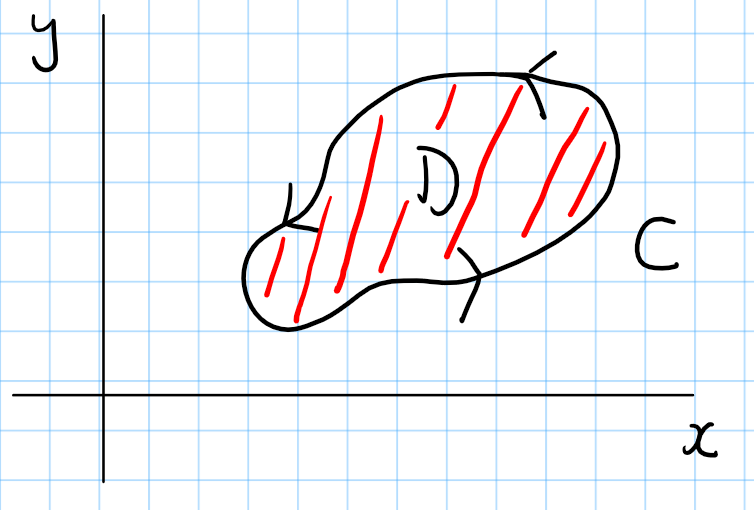
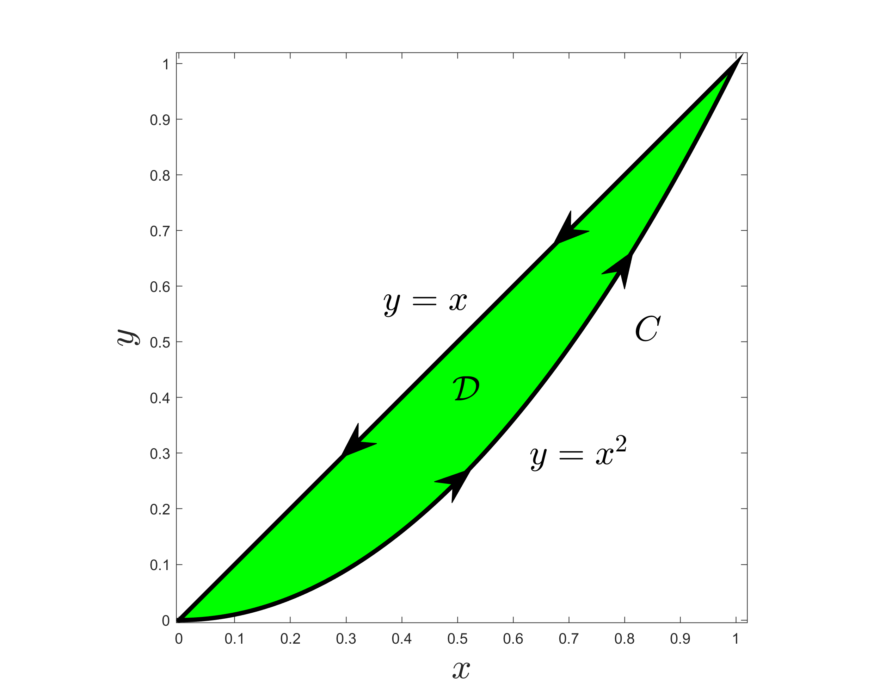

Advanced Calculus
Lecture 8
Jonathan Crofts
Nottingham Trent University
Advanced Calculus L8
- Green's theorem
- Using Green's theorem to compute the flux and/or circulation of a vector field
- Examples
Green's theorem
Let $C$ denote a closed curve bouding a region $\mathcal{D}$
Green's theorem allows us to restate the line integal along $C$ as a multiple integral of a certain function over $\mathcal{D}$
The Green of Green's theorem was George Green (1793-1841), a self-taught scientist from Nottingham!
Theorem 8.1 (Green's theorem)
Let $\mathcal{D}$ be a planar region and let $C$ be its boundary. Suppose that $C$ is a simple closed curve. Suppose also that $P=P(x,y)$ and $Q=Q(x,y)$ are any pair of continously differentiable functions defined on $\mathcal{D}$, then
\[ \oint_C P(x,y)\,\mathrm{d}x + Q(x,y)\,\mathrm{d}y = \iint_\mathcal{D}\frac{\partial Q}{\partial x}-\frac{\partial P}{\partial y}\,\mathrm{d}x\mathrm{d}y \]where the curve $C$ is traversed counter-clockwise in the integral on the left.
For a proof of the above result see Section 5.1 of the online notes
Example 8.1
Evaluate the integral
\[ \oint_CP\,\mathrm{d}x+Q\,\mathrm{d}y \]where $\mathcal{U}$ is the unit square and
\[ P(x,y) = y^2+\sin{x^2}, \qquad Q(x,y) = \cos{y^2}-x \]Solution
Firstly, \[ \frac{\partial Q}{\partial x} = -1,\qquad \frac{\partial P}{\partial y} = 2y \]so that by Green's theorem:
\[ \oint_C\left(y^2+\sin{x^2}\right)\,\mathrm{d}x +\left(\cos{y^2}-x\right)\,\mathrm{d}y = \int_0^1\int_0^1 \left(-1-2y\right)\,\mathrm{d}x\mathrm{d}y \]Example 8.1 (ctd)
\[ \oint_C\left(y^2+\sin{x^2}\right)\,\mathrm{d}x +\left(\cos{y^2}-x\right)\,\mathrm{d}y = \int_0^1\int_0^1 \left(-1-2y\right)\,\mathrm{d}x\mathrm{d}y \]Thus
\[ \begin{align*} \int_0^1\int_0^1 \left(-1-2y\right)\,\mathrm{d}x\mathrm{d}y &= \int_0^1\bigg[(-1-2y)x\bigg]_0^1\,\mathrm{d}y\\ &=\int_0^1\left(-1-2y\right)\,\mathrm{d}y\\ &= \bigg[-y-y^2\bigg]_0^1 = \color{red}{\boxed{\color{white}{-2}}} \end{align*} \]Advanced Calculus L8
- Green's theorem
- Using Green's theorem to compute the flux and/or circulation of a vector field
- Examples
Green's Theorem can be applied directly to compute the work done when $\mathbf{F}$ is a force field or the circulation when $\mathbf{F}$ is a velocity field. However, to compute the flux, the formulation of the theorem needs to be modified using the concept of outward normal or divergence.
The flux is given by:
\[ \oint_C\mathbf{F}\cdot\mathbf{n}\,\mathrm{d}s \]To Use Green's theorem we need to write $\mathbf{n}$ in terms of our parametrisation $\mathbf{r}$:
\[ \begin{align*} \mathbf{n} &= \mathbf{T}\times\mathbf{k}\\ &= \begin{vmatrix}\mathbf{i}&\mathbf{j}&\mathbf{k}\\ x'&y'&0\\ 0&0&1 \end{vmatrix} \end{align*} = (y', -x', 0) \]Here, $\mathbf{T}$ is the unit tangent vector and $\mathbf{k} = (0,0,1)$
Thus
\[ \color{red}{\boxed{\color{white}{ \oint_C\mathbf{F}\cdot\mathbf{n}\,\mathrm{d}s = \oint_C (F_1, F_2)\cdot (\mathrm{d}y, -\mathrm{d}x) = \oint_C\left(-F_2\right)\,\mathrm{d}x + \left(F_1\right)\,\mathrm{d}y}}} \]In the above setting $P = -F_2$ and $Q=F_1$ allows us to apply Green's theorem
Advanced Calculus L8
- Green's theorem
- Using Green's theorem to compute the flux and/or circulation of a vector field
- Examples
Example 8.2
Find the counterclockwise circulation and outward flux of the field
\[ \mathbf{F} = xy\mathbf{i}+y^2\mathbf{j} \]around and over the boundary of the region enclosed by the curves $y=x^2$ and $y=x$ in the first quadrant
Solution
Circulation: We have $\mathbf{F} = (xy, y^2)$ so that
\[ P(x,y) = xy\quad\text{and}\quad Q(x,y) = y^2 \]with respective partial derivatives:
\[ \frac{\partial Q}{\partial x} = 0 \quad\text{and}\quad\frac{\partial P}{\partial y} = x \]We are now in a position to implement Green's theorem
Example 8.2 (ctd)
We need to compute the integral:
\[ \begin{align*} \oint_C \mathbf{F}\cdot\mathrm{d}\mathbf{r} &= \oint_C F_1\,\mathrm{d}x+ F_2\,\mathrm{d}y\\ &= \oint_C \left(xy\right)\,\mathrm{d}x+\left(y^2\right)\,\mathrm{d}y\\ &= \int_0^1\int_{y=x^2}^{y=x} \left(\frac{\partial}{\partial x}\left(y^2\right) - \frac{\partial}{\partial y}\left(xy\right)\right)\,\mathrm{d}y\mathrm{d}x \\ &= \int_0^1\int_{y=x^2}^{y=x}\left(-x\right)\,\mathrm{d}y\mathrm{d}x = \int_0^1\bigg[-xy\bigg]_{x^2}^{x}\,\mathrm{d}x\\ &=\int_0^1 \left(-x^2+x^3\right)\,\mathrm{d}x = \bigg[-\frac{1}{3}x^3+\frac{1}{4}x^4\bigg]_0^1 = \color{red}{\boxed{\color{white}{-\frac{1}{12}}}} \end{align*} \]Example 8.2 (ctd)
Flux: For the flux equation we have that
\[ P(x,y) = -F_2 = -y^2\quad\text{and}\quad Q(x,y) = F_1 = xy \]So that
\[ \oint_C \mathbf{F}\cdot\mathbf{n}\,\mathrm{d}s = \oint_C \left(-y^2\right)\,\mathrm{d}x+\left(xy\right)\,\mathrm{d}y \]Computing the partial derivatives gives:
\[ \frac{\partial Q}{\partial x} = y\quad\text{and}\quad \frac{\partial P}{\partial y} = -2y \]And so by Green's theorem
\[ \begin{align*} \oint_C \mathbf{F}\cdot\mathbf{n}\,\mathrm{d}s&=\int_0^1\int_{y=x^2}^{y=x}\left(3y\right)\,\mathrm{d}y\mathrm{d}x = \int_0^1\left[\frac{3}{2}y^2\right]_{x^2}^x\,\mathrm{d}x\\ &=\int_0^1 \frac{3}{2}\left(x^2-x^4\right)\,\mathrm{d}x = \frac{3}{2}\bigg[\frac{1}{3}x^3-\frac{1}{5}x^5\bigg]_0^1 = \color{red}{\boxed{\color{white}{\frac{1}{5}}}} \end{align*} \]Example 8.3
Let
\[ \mathbf{F} = \left(y^2-x^2\right)\mathbf{i}+\left(x^2+y^2\right)\mathbf{j} \]and let $C$ be the boundary of the region $\mathcal{D}$ in the first quadrant bounded by the triangle $y=0$, $x=3$ and $y=x$, oriented counter-clockwise.
(a) Sketch the region $\mathcal{D}$
(b) Evaluate $\displaystyle \oint_C\mathbf{F}\cdot\mathrm{d}\mathbf{r}$ using Green's theorem
Solution
We begin by drawing the region $\mathcal{D}$
Here
\[ \color{red}{\boxed{\color{white}{ P(x,y) = y^2-x^2 \quad\text{and}\quad Q(x,y) = x^2+y^2 }}} \]
Example 8.3 (ctd)
Thus
\[ \frac{\partial Q}{\partial x} = 2x \quad\text{and}\quad\frac{\partial P}{\partial y} = 2y \]And so by Green's theorem we have
\[ \begin{align*} \oint_C \mathbf{F}\cdot\mathrm{d}\mathbf{r} &= \iint_\mathcal{D}\frac{\partial Q}{\partial x}-\frac{\partial P}{\partial y}\,\mathrm{d}x\mathrm{d}y\\ &=\int_0^3\int_0^{y=x}\left(2x-2y\right)\,\mathrm{d}y\mathrm{d}x \\ &=\int_0^3\bigg[ 2xy-y^2\bigg]_0^x\,\mathrm{d}x = \int_0^3\left(2x^2-x^2\right)\,\mathrm{d}x\\ &=\int_0^3 x^2\,\mathrm{d}x = \left[\frac{1}{3}x^3\right]_0^3 = \color{red}{\boxed{\color{white}{9}}} \end{align*} \]As demonstrated in Example 6.1, calculating this integral via direct line integration proved to be substantially less efficient than utilising Green's Theorem.
Lecture 8 Review
- In this lecture we covered
- Green's theorem
- Using Green's theorem to compute the flux and/or circulation of a vector field
- After this lecture you should be able to
- State Green's Theorem and identify the conditions under which it can be applied to a vector field over a planar region.
- Apply Green's Theorem to transform a line integral into a double integral, and vice versa, to simplify calculations.
- Evaluate line integrals over closed curves by using the double integral form of Green's Theorem